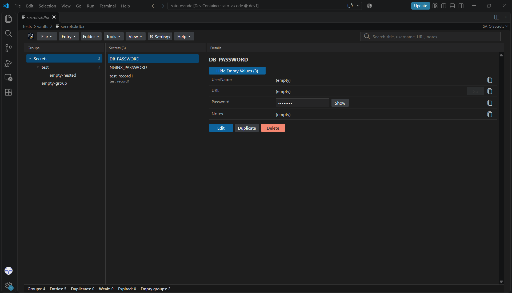
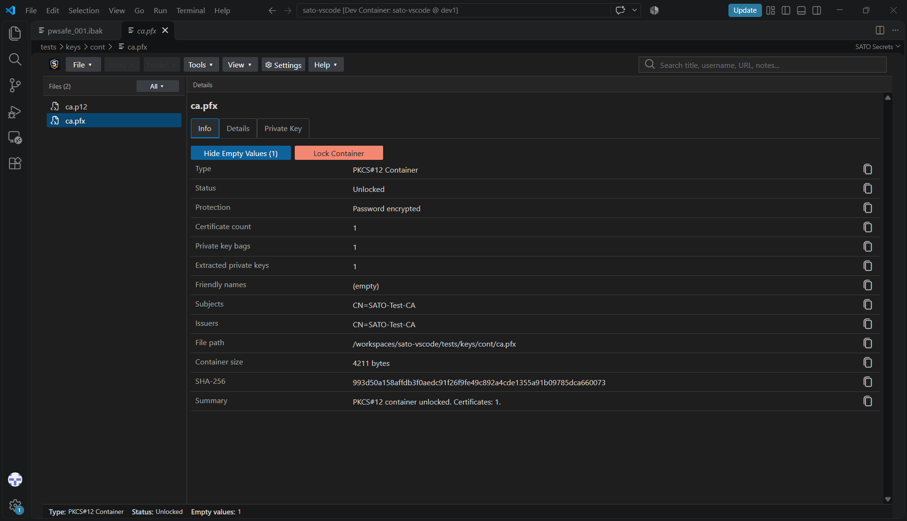
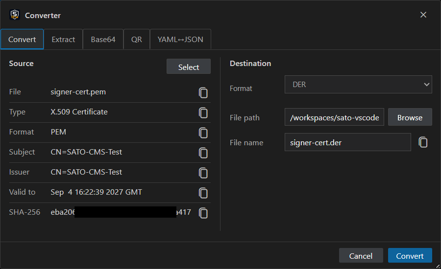
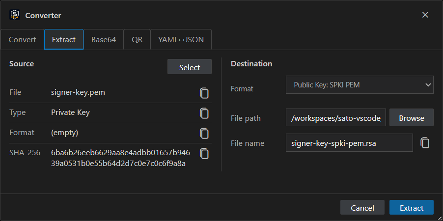
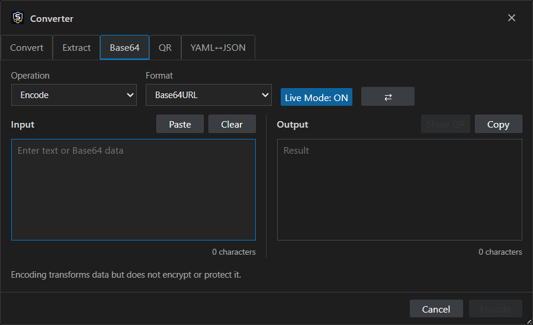
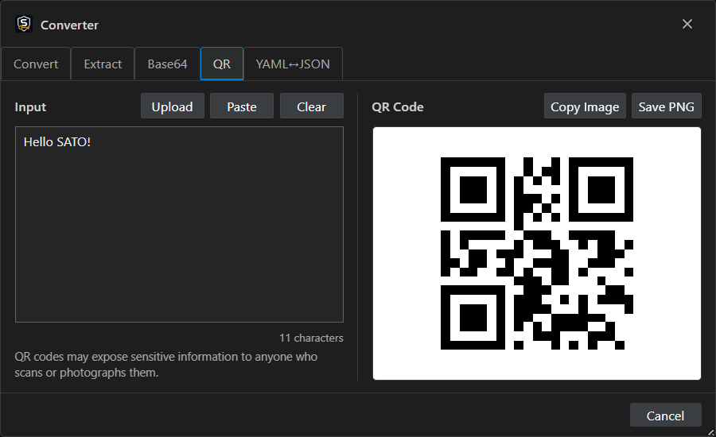
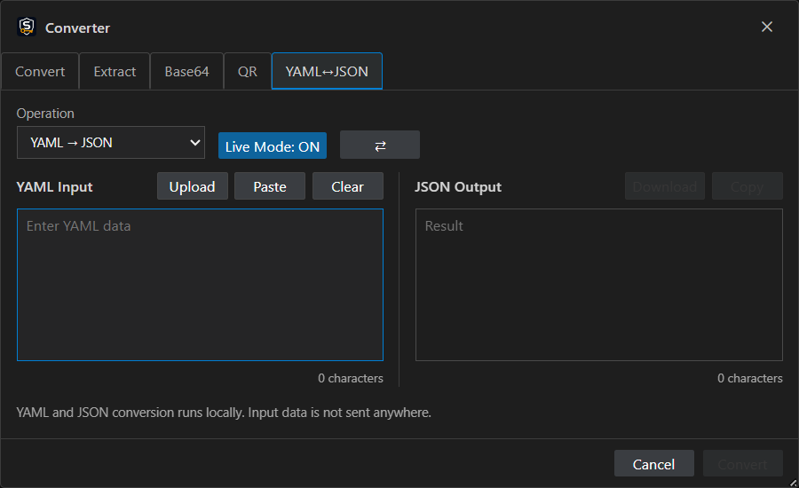
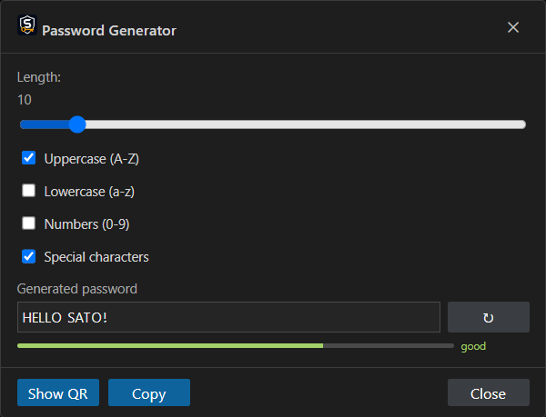

1. Introduction
SATO, Security Access Task Operator, enables work with vaults, cryptographic files, and password-protected archives. See the complete list of supported formats.
SATO Secrets is a VS Code-compatible extension with a single unified interface and a collection of helpful tools.
SATO's goal is to display different formats directly in a single UI, replacing numerous command-line tools in everyday work.
Key capabilities
- SATO stores data only in memory or temporary backup files.
- Built-in tools include converters and a password generator.
2. Installation
Select the editor below to view the appropriate installation instructions.
Open VS Code or VSCodium, select Extensions in the left panel, search for SATO Secrets, and select Install.
Download the latest (or any other) VSIX version and run:
To start SATO, open any supported file. The SATO UI appears automatically.
External Tools Setup (Optional)
External tools allow SATO to retrieve and display additional information alongside the built-in data. See the external tools details.
- Install Gpg4win, OpenSSL for Windows, PuTTY, OpenJDK or another Java Runtime, 7-Zip CLI, unegg, and age.
- Enable the Windows OpenSSH Client optional feature.
- Ensure
openssl,gpg,keytool,7z, anduneggare available inPATH.
3. Work with SATO
SATO uses a simplified interface that adapts to the opened file type. The context menu also changes according to the file type.
3.1. Password Vault Management
The vault view uses a three-pane interface:
- Left pane: folder list
- Center pane: secrets list
- Right pane: secret details

3.2. Cryptofile Management
The cryptographic file view uses a two-pane interface:
- Left pane: file list
- Right pane: file information

3.3. Archives Management
SATO opens supported archives in the same adaptive interface and exposes relevant actions for the selected archive format.
4. SATO's Internal Tools
SATO includes offline-friendly tools that are available directly from the extension interface.
5. Converters
The Converter changes supported files from one format to another and is organized into several tabs.
5.1. Converter
The Converter is available for supported certificate and cryptographic formats. If the action is inactive or absent, conversion is not supported for that file or has not yet been implemented.

5.2. Extractor
The Extractor retrieves keys from supported files. The Extractor is similar to the Converter but is separated into a dedicated workflow.

5.3. Base64 Converter
Encodes or decodes information using Base64. Live Mode converts information in real time, and the result can also be converted to a QR code.

5.4. QR Code Converter
Converts information into a QR code for further use. Avoid encoding sensitive information in QR codes that could be scanned or photographed.

5.5. YAML ↔ JSON Converter
The built-in YAML ↔ JSON converter supports uploaded files and pasted text. Conversion runs locally, and input data is not sent anywhere.

Converter options are available in Settings under the Converter tab.
6. Password Generator
Generates passwords according to the selected settings and can convert a generated password into a QR code.

Password Generator options are available in Settings under the Password Generator tab.
7. Settings
Settings are available from SATO's main menu and are divided into tabs for the extension and individual components.
| Setting | Description | Default |
|---|---|---|
autoLockTimeout |
Auto-lock the vault after N minutes of inactivity. 0 disables auto-lock | 0 |
clipboardClearTimeout |
Clear the clipboard N seconds after copying a secret. 0 disables automatic clearing | 0 |
theme |
SATO interface theme: vscode | dark | gray | light |
vscode |
confirmBeforeDelete |
Ask for confirmation before deleting entries or folders | true |
showPasswordsByDefault |
Reveal passwords automatically in the entry details pane | false |
showEmptyValuesByDefault |
Show empty values by default in vault and cryptographic file details | true |
showStatusBar |
Show or hide vault, archive, contact, or cryptographic metadata in the status bar | true |
createArchiveBackups |
Create a backup before modifying a supported archive | true |
| Setting | Description | Default |
|---|---|---|
passwordGeneratorLength |
Default password length used by the Password Generator | 20 |
| Setting | Description | Default |
|---|---|---|
base64DefaultOperation |
Base64 operation: encode | decode |
encode |
base64DefaultFormat |
Base64 format: base64url | base64 | base32 | base32hex | hex |
base64url |
yamlJsonDefaultOperation |
Conversion direction: YAML→JSON | JSON→YAML |
YAML→JSON |
yamlJsonIndentation |
JSON output indentation: spaces-2 | spaces-4 | tabs |
spaces-2 |